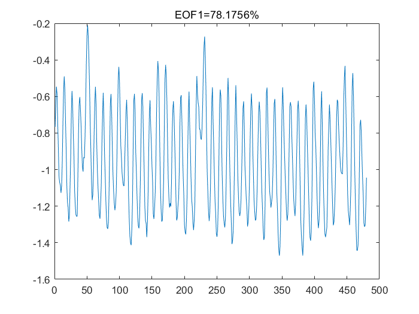
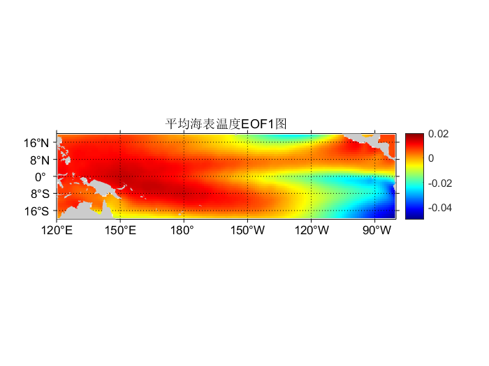
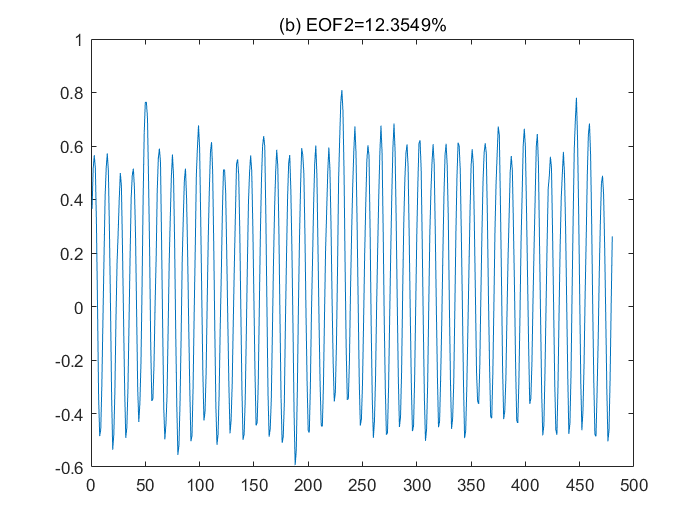
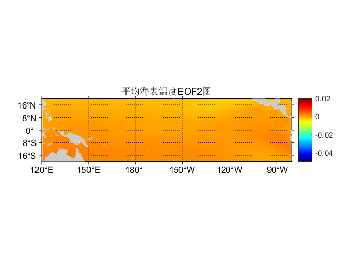

close all;clc; clear;
%--------读取数据与数据区域的选择-------%
% 读取数据
path = 'C:\Users\caobo\Desktop\研究生课程\海洋水文\第三章作业\第三章作业\sst_pacific_1979_2018.mat';
data = load(path);
SST = data.sst; % 根据实际变量名修改
lat = data.lat; % 根据实际变量名修改
lon = data.lon; % 根据实际变量名修改
time = data.time; % 根据实际变量名修改
[lat,lon]=meshgrid(lat,lon);
m_proj('miller','long',[120,280],'lat',[-20,20]);%选取研究地点：-20-20°N,120-280°E
SST=SST-273;%由华氏温度转化为摄氏温度
m_pcolor(lon,lat,mean(SST,3));
m_grid('tickdir','out');
m_gshhs_l('patch',[0.8 0.8 0.8],'Edgecolor','none');
colorbar;
colormap(jet);
title('1979-2018年热带太平洋海域海表温度原始图');
%----------经验正交模态分解（EOF）----------%
X=[];
for i=1:size(SST,3)
X(:,i)=reshape(SST(:,:,i),size(SST,1)*size(SST,2),1);
end
%距平
X1=X(find(~isnan(X)));%找出数据中的非零值
X2=reshape(X1,length(X1)/size(SST,3),size(SST,3));
Xba=mean(mean(X2));
X3=X2-Xba;
%--------------EOF1---------------%
SST_A=1/size(SST,3)*(X3*X3');%实对称矩SST_A
[SST_V,namta]=eig(SST_A);%实对称矩SST_A的特征向量SST_V和特征值namta
val1=flipud(diag(namta));
vec1=SST_V(:,size(SST_V,1));
EOF1=vec1;%最大特征值对应特征向量即为第一EOF模态（空间函数）
EOF1=EOF1*sqrt(val1(1,1));
PC1=vec1'*X3;%%%时间函数
PC1=PC1/sqrt(val1(1,1));
perc1=namta(size(SST_V,1),size(SST_V,1))/sum(diag(namta));%%计算方差贡献率
figure;
plot(PC1);
title(['EOF1=' num2str(perc1*100) '%']);
% d=diag(namta);%取出特征值矩阵列向量（提取出每一主成分的贡献率）
% namta_des=sort(d,'descend'); %将特征值矩阵列向量按照贡献率的大小descend降序排列
% v=fliplr(SST_V); %将特征向量L按照特征值大小从上向下排列
% SST_V1=v(:,size(v,1));
% SST_Z=SST_V'*SST; %时间函数
%--------------EOF1海表温度重构---------------%
XP1=vec1*PC1;
XEOF=zeros(size(SST,1)*size(SST,2),size(SST,3));
[x,y]=find(isnan(X));%找出数据中的NAN值
for k=1:length(x)
XEOF(x(k),y(k))=nan;
end
reshape(XP1,size(XP1,1)*size(XP1,2),1);
[x1,y1]=find(~isnan(X));
for i=1:length(x1)
XEOF(x1(i),y1(i))=XP1(i);
end
Xeof1=reshape(XEOF,size(SST,1),size(SST,2),size(SST,3));
figure
m_proj('miller','long',[120,280],'lat',[-20,20]);
m_pcolor(lon,lat,mean(Xeof1,3));
m_grid('tickdir','out');
m_gshhs_l('patch',[0.8 0.8 0.8],'Edgecolor','none');
colorbar;
caxis([-0.05,0.02]);
colormap(jet);
title('平均海表温度EOF1图');
%--------------EOF2---------------%
vec2=SST_V(:,size(SST_V,1)-1);
EOF2=vec2;%最大特征值对应特征向量即为第一EOF模态（空间函数）
EOF2=EOF2*sqrt(namta(size(SST_V,1),size(SST_V,1)));
PC2=vec2'*X3;%时间函数
PC2=PC2/sqrt(namta(size(SST_V,1),size(SST_V,1)));
perc2=namta(size(SST_V,1)-1,size(SST_V,1)-1)/sum(diag(namta));%计算方差贡献率
figure;
plot(PC2);
title(['(b) EOF2=' num2str(perc2*100) '%']);
%--------------EOF2海表温度重构---------------%
XP2=vec2*PC2;
XEOF=zeros(size(SST,1)*size(SST,2),size(SST,3));
[x,y]=find(isnan(X));
for k=1:length(x)
XEOF(x(k),y(k))=nan;
end
reshape(XP2,size(XP2,1)*size(XP2,2),1);
[x1,y1]=find(~isnan(X));
for i=1:length(x1)
XEOF(x1(i),y1(i))=XP2(i);
end
Xeof2=reshape(XEOF,size(SST,1),size(SST,2),size(SST,3));
figure
m_proj('miller','long',[120,280],'lat',[-20,20]);
m_pcolor(lon,lat,mean(Xeof2,3));
m_grid('tickdir','out');
m_gshhs_l('patch',[0.8 0.8 0.8],'Edgecolor','none');
colorbar
caxis([-0.05,0.02]);
colormap(jet);
title('平均海表温度EOF2图');
1979-2018年热带太平洋海域海表温度原始图
EOF1时间序列
平均海表温度EOF1空间分布
EOF2时间序列
平均海表温度EOF2空间分布